2026 年新闻动态（69 篇）
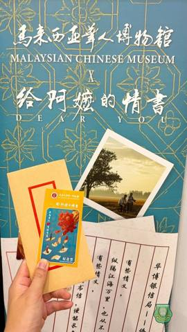
课本之外的南洋史诗：南华师生吉隆坡寻根手记
这两天，南华独中的10位同学在联课处老师的带领下，暂时放下紧凑的课业节奏，跨越山海，来了一场轻装上阵却分量十足的华人文化之旅。在大马华社的核心历史坐标间，青年学子们用脚步丈量历史，用视线触碰先辈扎根南洋的峥嵘岁月。 四大展馆的时光对谈 从隆阅读全文 →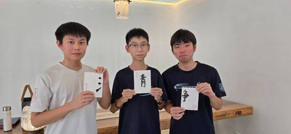
一盏清茶，一片匠心
在今天的茶文化选修课上，南华独中的同学们不仅亲身体验了传统泡茶与品茶的宁静雅致，更发挥创意，将泡茶后的茶叶渣晒干，巧手绘制成一幅幅独特的“茶叶画”！ 从舌尖的品味走向纸上的艺术，同学们在实践中完美融合了中华茶文化、美学教育与环保理念。为兼具阅读全文 →祝贺陳麗冰校长荣获 HRD Corp 认证讲师资格（Accredited Trainer）
卓越教育，领航先行！陈校长通过国家级严格审核，不仅是个人的专业荣耀，更是南华独中师资走向专业化、国际化的重要里程碑。 迈入 2026 年，陈校长将以此专业赋能团队，亲自规划高水准的校内教职员培训，并开拓更多跨界教育合作，为南华注入源源不绝的阅读全文 →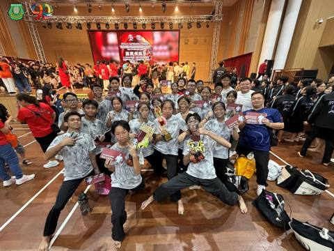
狂澜尽处见曙光·南华独中廿四节令鼓队
总决赛斩获佳作奖 在刚刚落幕的第三届YB吴家良杯中小学邀请赛总决赛中，南华独中廿四节令鼓队凭着震撼人心的剧目《猪仔船》，在强手如林的激烈角逐中脱颖而出，荣获总决赛佳作奖（第四名）！ 剧情震撼：重温华工南来的血泪史 《猪仔船》取材自早期华工南阅读全文 →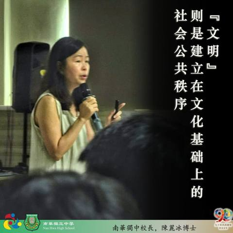
第四届学生领袖训练营·承光篇
专题讲座系列报导之四 校长陳麗冰博士：从独中精神看文化自信与公共责任 南华独中的孩子刚捧着从安焕然教授播撒的一段两百年华教史的文化种子，校长陳麗冰博士在次日的讲座中即刻搭建了一个未来沙盒世界：在2050年全国独中乃至于华教正面临着存亡之际。阅读全文 →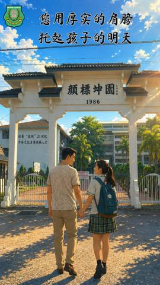
您用厚实的肩膀，托起孩子在南华的每一天
致所有默默付出、撑起家庭与孩子梦想的超人爸爸们，父亲节快乐！阅读全文 →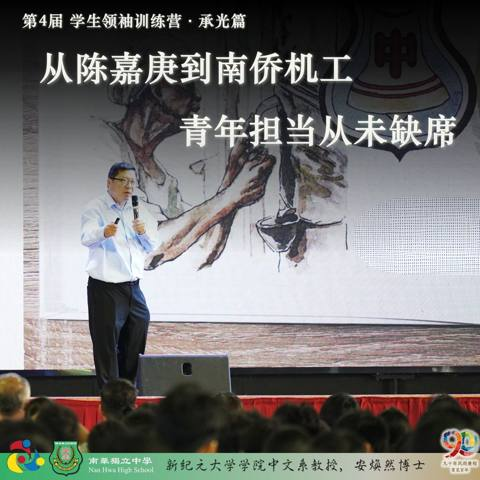
第四届学生领袖训练营·承光篇
专题讲座系列报导之三 安焕然教授—— 从陈嘉庚到南侨机工，青年担当从未缺席 "南洋社会造就了陈嘉庚，而陈嘉庚也滋养和改造了南洋华侨华人社会。"上述言论引援自前辈学者的定论，同时也正式打开了第四届学生领袖训练营·承光篇专题讲座系列第三场的格局阅读全文 →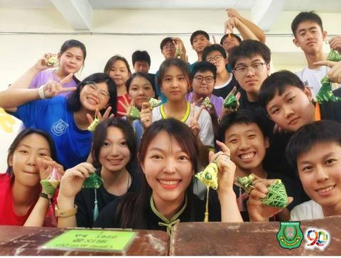
端午惊喜快闪
当传统端午撞上创意手作，这抹校园温馨，你愿意收下吗？ 由本校 联课处 精心策划的端午节快闪活动🏫突袭校园，在紧凑的课业📚间隙中，为全体师生带来了一场轻松不乏温馨✌️的节日体验！ 活动现场，由同学们亲手制作的🎋“毛线粽子”悄然亮相。🎊五彩斑斓阅读全文 →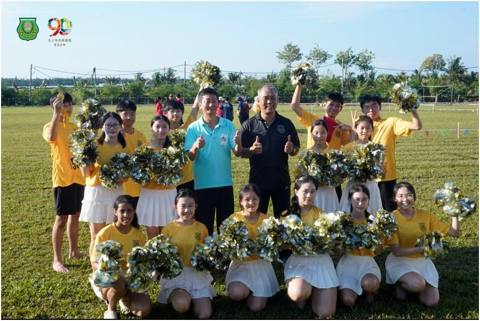
南华独中90周年校庆校运会特设小学田径邀请赛
3大源流11所小学百名健儿聚首同台竞技 （曼绒15日讯）配合创校90周年系列活动，曼绒南华独立中学于6月13日隆重举行第23届校园运动会。本届赛会特别增设小学田径邀请赛，成功吸引曼绒县内华小、国小与淡小三大源流共计11所小学的百名健儿同台切阅读全文 →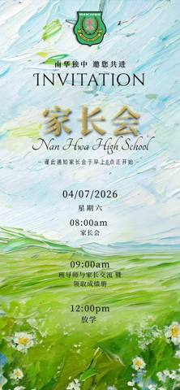
南华独中 | 家长会·一场爱与成长的邀约
学校的教学楼前，绿意正浓；教室里，满载着梦想。在这正是读书日的好时节里，南华独中向各位关心孩子成长的家长发出最诚挚的邀请—— 南华独中·家长会！ 为什么我们希望您来？ 这不仅是一场会议，更是一次温暖的相聚： 1️⃣ 与校方对话： 深入了解学阅读全文 →
惊天逆转！2026年南华独中运动会完美落幕
加分赛、田赛结束，红队积分一路领跑、优势尽显！ 但不到最后一刻，胜负绝未定 —— 黄队在径赛顶住巨大压力，奋起直追，最终以些微优势完成惊天大反超，勇夺全场总冠军！ 红队的强大与顽强，激发出黄队的无限潜能。这场属于全体南华健儿的热血激战，没有阅读全文 →田赛激情，今日燃爆
南华独中校园运动会田赛项目圆满落幕！ 今天，我们见证了跳远、跳高、铅球、铁饼、标枪选手的卓越表现。赛场上飞扬的身影，每一次跨越、每一次投掷，都凝聚着汗水与努力。 目前排名：红队暂时领先 🥇，黄队紧随其后 🥈，蓝队位列第三 🥉。 精彩继续！ 阅读全文 →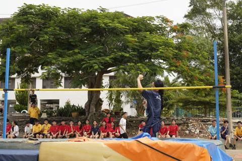
见证历史！尘封26年的校运会纪录在今天被刷新了
在今天女子乙组（13-15岁）跳高赛场上，来自蓝队的 陈佳纹 同学以 1.30米 的惊人成绩，成功打破了由黄玲媚校友在2000年创下并保持至今的 1.27米 大会纪录！ 这珍贵的3厘米，南华等待了足足26年！跃过的是横杆，刷新的是历史！让我阅读全文 →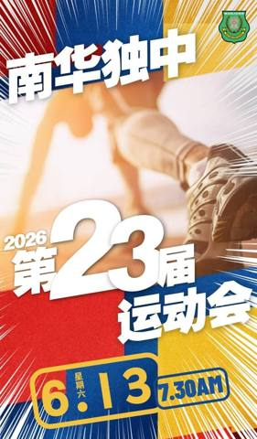
热身赛全开！南华色队得分战已经打响！师生齐心，势如破竹
为 13/6 的正式运动会预热，我们的老师和学生们已经在赛场上全力以赴！ 不论是我们的老师还是学生，在加分赛中，只要达到 400米、跳远或铅球 的最低标准，就能为你的色队赢得宝贵分数！ 每一个动作都可能是胜利的关键，每一次尝试都在书写传奇！阅读全文 →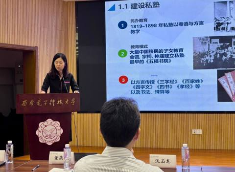
陳麗冰校长受邀分享马来西亚华文教育史
【西安讯】在“西安电子科技大学—马来西亚教育科技人才战略联盟成立暨签约仪式”上，本校校长陳麗冰博士受邀代表霹雳州九所华文独立中学校长发表专题演讲，以《南洋土地上的文化坚守——马来西亚华文教育两百年的壮丽史诗》为题，向中国教育界讲述马来西亚华阅读全文 →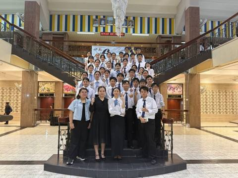
捷报！南华管乐队“春蕾”再夺金奖
2026年6月4日，我校管乐队前往槟城 Dewan Sri Pinang 参加《Festival Kesenian Muzik 2026（春蕾）》音乐节。团员们凭借参赛曲目《Majestia》的精彩演绎，以气势磅礴的完美配合震撼全场！ 二次阅读全文 →南华独中🚂💨校友回校日：时光列车启程
日期： 8月29日 (SAT) 地点： 南华独中 主题： 校友回校时光列车 穿越时光✨重返青春现场 南华独中校友回校时光列车」正式发车。从90周年校庆典礼到旧时教室的朗朗书声，从重温学生食堂的《食光如昨》，到大礼堂的文艺大汇演。这一天，让我阅读全文 →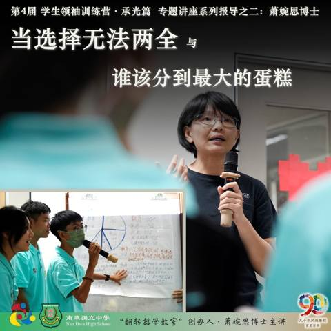
第四届学生领袖训练营 · 承光篇
专题讲座系列报导之二：萧婉思博士 当选择无法两全 与 谁该分到最大的蛋糕 "最难的从来不是选择本身，而是你必须承担选择背后的代价。"截自《当选择无法两全》 "真正困难的不是选哪一边，而是在做选择时，你究竟代表谁在说话。"截自《谁该分到最大的阅读全文 →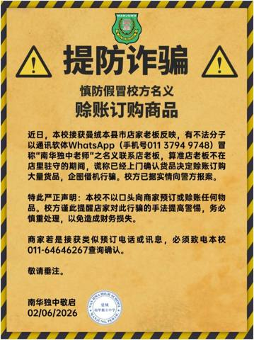
严正声明：提防诈骗，慎防赊账订购商品
近日，本校接获曼绒本县市店家老板反映，有不法分子以通讯软体WhatsApp（手机号011 3794 9748）冒称“南华独中老师”之名义联系店老板，算准店老板不在店里驻守的期间，谎称已经上门确认货品决定赊账订购大量货品，企图借机行骗。校方已阅读全文 →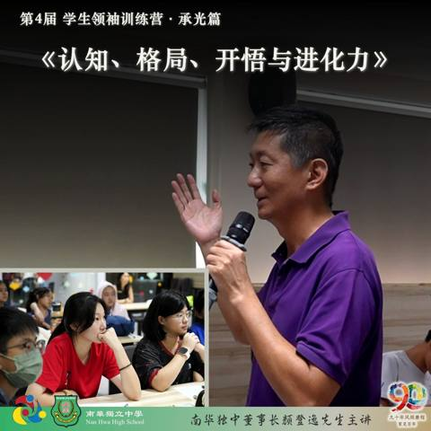
南华独中 2026年 第四届 学生领袖训练营(承光篇)
专题讲座系列报导之一 认知、格局、开悟与进化力 每年南华独中学生领袖训练营都会有一场由董事长颜登逸先生亲临主讲，主题范围正是“领袖素养 ”，而今年则以《AI时代：决定未来的进化力》为题，为参营学生系统阐述一套足以穿越时代的竞争力底层框架——阅读全文 →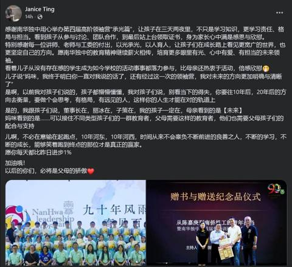
感恩有您 • 承光而行，见证孩子的格局与蜕变
在第四届高阶领袖营“承光篇”落幕后，校方收到了来自营员家长 Janice Ting 非常令人动容的长文回馈。 看到孩子在三天两夜里，不仅学习知识，更学会了责任与担当，甚至对妈妈说出：“我对未来的方向更加明确与清晰了”…… 这番话，让我们深深阅读全文 →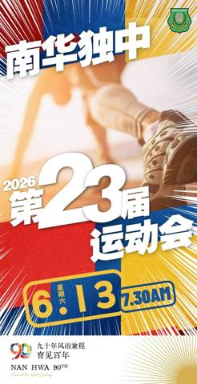
2026年 第23届 南华独中运动会
暨 小学田径邀请赛 九十年风雨兼程 育见百年 用汗水诠释运动的纯粹，以拼搏礼赞成长的力量。体育不仅仅是速度与力量的角逐，更是坚韧意志与团队精神的展现。在南华独中这片承载着九秩奋斗记忆的土地上，今天我们将共同见证运动健儿的全力以赴。本届盛会不阅读全文 →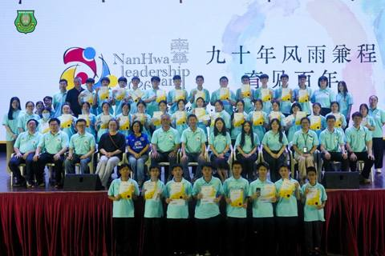
南华独中第四届高阶领袖营“承光篇” 落幕
汇聚名师智慧 全方位淬炼未来领袖认知与格局 （曼绒26日讯）南华独中第四届学生领袖训练营（高阶版·承光篇）于5月21日至23日举行，历经三天两夜的深度学习，四十余名南华学生领袖在九位讲师的倾心引领下，经历了一场从认知、格局到灵魂的全方位淬炼阅读全文 →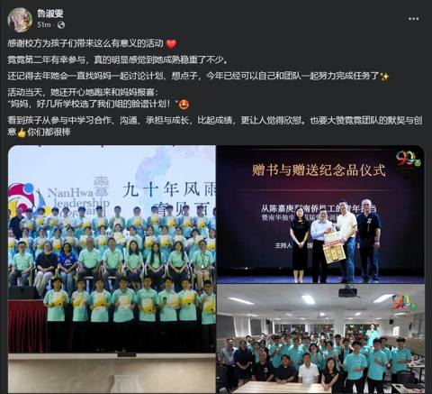
感恩有您 • 见证成长
在刚刚圆满结束的领袖训练营中，我们非常开心看到孩子们收获了满满的蜕变。收到来自营员“霓霓”家长的温馨分享，字里行间都是满满的感动： 家长分享原文： 「感谢校方为孩子们带来这么有意义的活动 霓霓第二年有幸参与，真的明显感觉到她成熟稳重了不少。阅读全文 →南华独中 2026年 第4届
学生领袖训练营特邀讲师 Yun Ysi Siew 为本次营会带来了两场互动式哲学思辨活动—— 《当选择无法两全：困境中的对与错》以及 《谁该分到最大的蛋糕？——公平、资源与正义的思辨课》。Updated May 24, 2026 8:41:阅读全文 →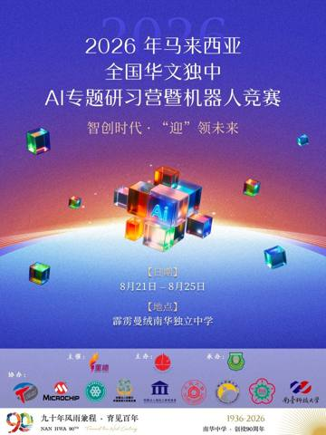
通告：2026年马来西亚华文独中AI专题研习营暨机器人竞赛开始接受报名
由马来西亚华校董事联合会总会（董总）主催 、马来西亚霹雳州华校董事联合会主办 、马来西亚曼绒南华独立中学承办 ，以及台湾嵌入式暨单晶片系统发展协会协办的“2026年马来西亚华文独中AI专题研习营暨机器人竞赛” ，现已正式开放给各校师生报名。阅读全文 →九十年风雨兼程 ，南华始终在这里，邀历届校友，搭乘这一趟
“校友回校时光车” 让您随着这班车的出发，回到书声依旧的母校，拾忆校园昨日流光。 校友们，在这里与老师重逢、与同窗重聚、重新搭一趟承载着记忆与恩情，一路直达南华独中与您共织的育见百年大业。 校友们！回家看看吧！ 日期：8月29日(星期六) 阅读全文 →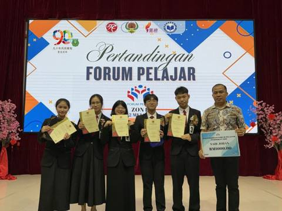
全霹雳九独中国语论坛比赛
南华独中团队以台风稳健夺得亚军佳绩 南华独中国语论坛队在马来文组老师带领下勇闯2026年度全霹雳华文独立中学国语论坛比赛勇夺亚军佳绩，载誉而归。此次赛事由国家语文出版局（Dewan Bahasa dan Pustaka，DBP）主办，来自全阅读全文 →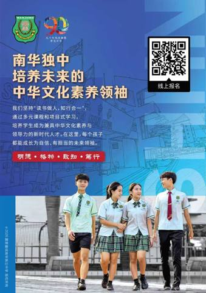
2027年度 初一新生招收 正式开始
1) 2026年度六年级在籍学生，本校将直接录取。 2) 凡未符合录取标准者亦可报名参与本校入学考试。 1)品行良好，操行A等或B等。 2) 活跃于课外活动、运动项目。 1) 全体新生皆需参与本校入学考试以公平衡量学生的学术水平。 2) 考阅读全文 →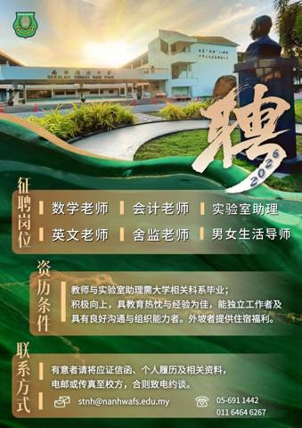
诚邀加入·南华独中团队
本校因校务发展，高薪聘请对教育改革、人文素养、专业能力、在职进修与个人提升充满热忱的你。 征聘岗位如下： 1.数学老师 2.英文老师 3.会计老师 5.实验室助理(须有大学相关文凭) 6.舍监老师 7.男女生活导师 教师与实验室助理需大学相阅读全文 →深情凝望·定格故乡·南华独中学生戴继铉
夺下霹雳新村摄影赛亚军 本校高三生戴继铉，凭借一帧记录曼绒县爱大华刹那光辉的作品，夺下由霹雳州行政议员吴家良办公室主办的2026年霹雳新村"家"节摄影比赛亚军，荣获奖金RM2500。同届入围的还有本校生陈守亿，以作品《阳光面线》记录甘文阁新阅读全文 →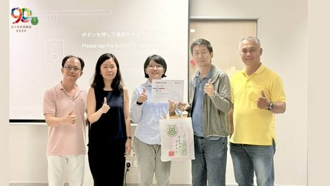
南华独中90周年校庆教育研讨会系列报道之三
思辨开蒙，从“看见”到“判断” 萧婉思博士主讲 哲学思辨教育在AI时代校园里的真实作用 “这个时代不缺信息，缺的是判断。”在南华独中九十周年校庆教育研讨会系列讲座的第三场，哲学思辨教育推广者萧婉思博士以一句话道破当代教育最深层的困境：孩子们阅读全文 →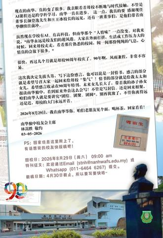
90年了，南华兄弟姐妹们，学校有需要，我们就回来吧
——校友会主席 林嵩胜 各位南华独中老同学、好兄弟、好姐妹： 大家好，不管是叫我小弟林嵩胜的，或者林嵩胜大哥的，还有叫我 阿省 知道平时上金马仑找我，要大山里干活的我握笔写那些文绉绉的文章。真的写出来，大家肯定要笑话我：“嵩胜，这不像你啊！阅读全文 →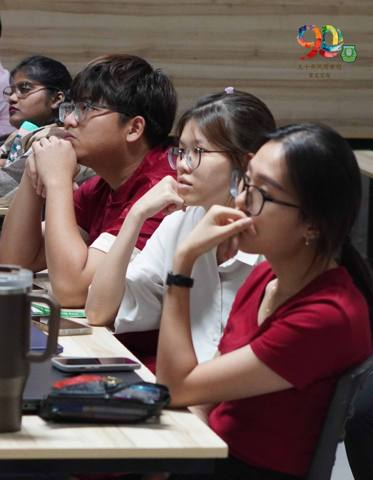
南华独中90周年校庆教育研讨会系列报道之二
思考是永恒的教育叩问 狄更斯说：这是最好的时代，这也是最坏的时代。当这句话从孙德俊老师口中道出，萦绕在南华独中讲堂上空时，在场的每一个教育工作者，心里都落下了同一个重量。 南华独中90周年校庆系列教育研讨会第二场讲座主题为《AI时代：205阅读全文 →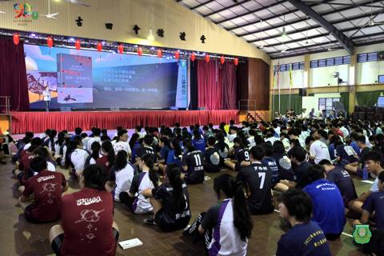
以正义为尺 · 以阅读为镜
"悦读南华"2026世界阅读日校园共读活动 南华独中全体师生藉2026年"世界阅读日"（World book Day）齐聚礼堂，参与主题为"悦读南华"的校园共读活动。在一年一度的书香盛会中，华文科教师林子策老师担任本届活动导读人，带领师生走阅读全文 →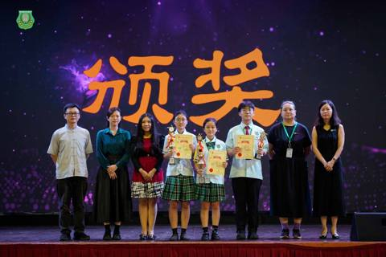
第46届曼绒县华语演讲比赛南华学子摘金夺奖
初中夺冠·高中季军 （曼绒28日讯）第46届曼绒县中学华语演讲比赛日前在福清洋育英华小礼堂举行，由霹雳州曼绒县华校教师会与曼绒中华大会堂联合主办。南华独中派出初中、高中两组共四名代表参赛，最终在竞争激烈的赛场上展现实力，斩获佳绩。 初中组代阅读全文 →一片茶叶跨海而来·在南洋校园生根发芽
——《东方日报》26/4/2026Updated Apr 26, 2026 5:39:40 pm阅读全文 →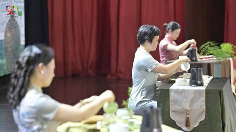
漳科院跨洋访南华独中·携手共建中国茶文化推广中心
茶，是中华文明古老的文化符码之一。 一叶一世界，一盏一道场。当这片叶子从福建漳州渡海而来，落根于曼绒南华独中的校园，它带来的不只是茶香，更是一座历经一年酝酿、跨越海峡的教育承诺终于兑现。 漳州科技职业学院与曼绒南华独中于日前在南华独中礼堂暨阅读全文 →2026 年 4 月校园动态
请大家支持本校摄影学会_爱大华新村_《19_07 · 外景》入围前30强，点击链接按赞支持
谢谢。 【霹雳新村摄影比赛】30强作品正式出炉！ 除了冠亚季军，我们还特设 RM1000人气奖由你投票决定！ 投票教学： 1️⃣Like/Follow 我们的 FB / IG 专页。 2️⃣点赞相应作品的照片。 ⏳截止日期：4月25日 注意阅读全文 →2026 年 4 月校园动态
请大家支持本校摄影学会_甘文阁新村_《阳光面线》入围前30强，点击链接按赞支持
谢谢。 【霹雳新村摄影比赛】30强作品正式出炉！ 除了冠亚季军，我们还特设 RM1000人气奖由你投票决定！ 投票教学： 1️⃣Like/Follow 我们的 FB / IG 专页。 2️⃣点赞相应作品的照片。 ⏳截止日期：4月25日 注意阅读全文 →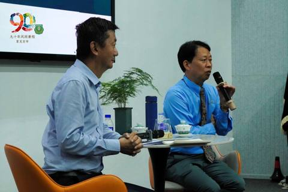
南华独中90周年校庆教育研讨会系列报道之一
陈伟教授与颜登逸董事长 当芯片遇见课堂：纵论AI时代的教育重塑 晨光甫至，南华独中讲堂已逾百人落座。现场是来出席参加90周年校庆系列教育研讨会的第一场座谈会，主题聚焦于AI浪潮下的教育转型。台上坐着的，是一位手握芯片研究经验的学者与一所守护阅读全文 →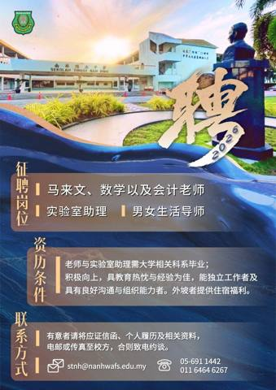
诚邀加入·南华独中团队
本校因校务发展，高薪聘请对教育改革、人文素养、专业能力、在职进修与个人提升充满热忱的你。 征聘岗位如下： 1.马来文老师 2.会计老师 3.数学老师 4.实验室助理(须有大学相关文凭) 5.男女生活导师 教师与实验室助理需大学相关科系毕业；阅读全文 →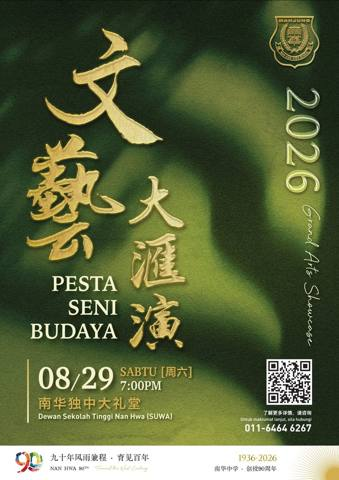
曼绒南华独中创校 90 周年系列活动
2026年🌟艺汇南华·共鸣大地🌟文艺大汇演 九十年风雨兼程 育见百年 九十年，不过历史长河中的一段刻度； 却足以让一所学校，在风雨之中站稳脚步， 在岁月深处安放无数人的青春。 曼绒南华独立中学走过九十年，从筚路蓝缕到弦歌不辍，从寂然守望到桃阅读全文 →邦咯岛社造分享走入校园·南华独中掀土地认同思考
——《东方日报》21/3/2026Updated Mar 27, 2026 8:01:33 am阅读全文 →南华独中 90周年校庆
九十年风雨兼程 育见百年 诚邀教育同仁及各界人士出席参与 🌐 重塑AI.时代教育 研讨会🌐 共同探讨在技术与人文的碰撞下，教育如何实现本质的重塑与跨越。 深度课题 · 核心解析 ● AI 时代下 教育解构与重塑 ● 教育者素养 ● 从哲学教阅读全文 →大马中学生 AI机器人赛优胜者
赴华参加人工智能培训 —— 《东方日报》25/3/2026Updated Mar 25, 2026 5:29:47 pm阅读全文 →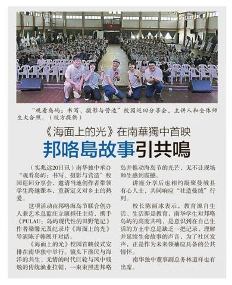
《海面上的光》在南华独中首映
邦咯岛故事引共鸣——《星洲日报》21/3/2026阅读全文 →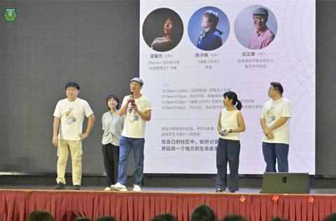
从岛屿映射到半岛上的光·邦咯岛社造分享会感动南华独中师生
当文字、影像与社造思维在校园交织，一场关于“土地认同” 的觉醒正在南华学子心中萌发。本校日前成功承办校园巡回分享会——《观看岛屿：书写、摄影与营造》，邀请在地创作者带领学生跨越课本边界，重新定义对乡土的热爱。 本次活动由邦咯海岛节联合创办人阅读全文 →
Selamat Hari Raya Aidilfitri
Ucapan Ikhlas daripada warga Sekolah Tinggi Nan Hwa! 南华独中恭祝开斋节快乐阅读全文 →南华独中90年校庆系列活动 之重塑AI时代教育研讨会
AI时代，科技文明与教育重构 The AI Era: Technological Civilization and the Reconstruction of Education 陈伟教授 Professor Wei Chen 2026 年阅读全文 →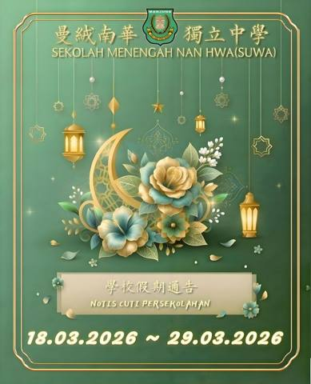
2026 年 3 月校园动态
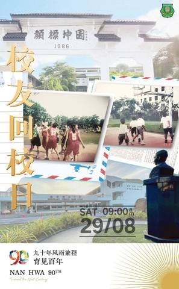
九十年风雨兼程 育见百年
南华独中 校友回校日暨特刊征文 * 活动主题：九十年风雨兼程，育见百年 * 回校日期：29/08（周六） * 回校时间：09:00 am * 地点：曼绒南华独立中学 校友回校日 是旧识新知的场域，更是万缕缘分的集结： 九十载光阴，南华不仅是阅读全文 →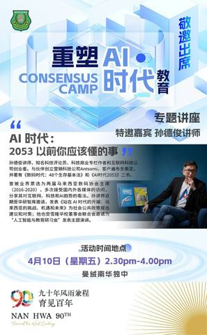
南华独中90年校庆系列活动 之重塑AI时代教育研讨会
站在曼绒南华独立中学创校 90 周年的历史交汇点，我们不仅回望过去的教育初心，更以前瞻视野观测时代巨变。 当 AI 技术重构社会逻辑，当哲学思考回归教育本质，教育工作者与育人者该如何自处？本次教育研讨会特别邀请业内资深专家，针对“人工智能的阅读全文 →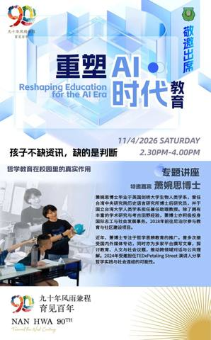
南华独中90年校庆系列活动 之重塑AI时代教育研讨会
【孩子不缺信息，缺的是判断—— 哲学教育在校园里的真实作用 】 萧婉思博士Dr. Siew Yun Ysi 2026 年 4 月 11 日（星期六 Saturday） 2.30pm - 4.00pm 专题讲座报名附在贴文底下的留言处， 有意阅读全文 →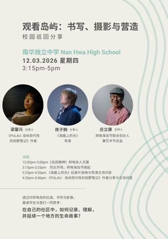
观看岛屿：书写、摄影与营造
校园巡回分享 南华独立中学 Nan Hwa High School 12.03.2026 星期四 3.15pm-5pm 分享人： 梁馨元《PULAU: 岛屿现代性的田野笔记》作者 陈子韩《海面上的光》导演 主持人： 邦咯海岛节联合创办人兼艺阅读全文 →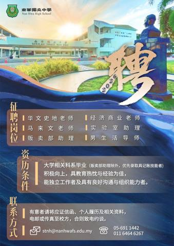
诚邀加入·南华独中团队
本校因2026年校务发展，高薪聘请对教育改革、人文素养、专业能力、在职进修与个人提升充满热忱的你。 征聘岗位如下： 1.华文史地老师 2.经济商业老师 3.马来文老师 4.实验室助理 5.男生活导师 6.贩卖部助理 须有大学相关科系毕业（贩阅读全文 →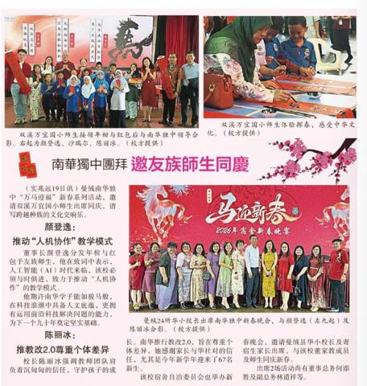
南华独中团拜 邀友族师生同庆
——《星洲日报》22/2/2026阅读全文 →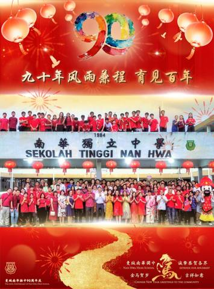
曼绒南华独中 诚挚恭贺各界：金马奔腾报佳音，阖家安康万事兴
午岁吉祥，福慧双全！ 适逢南华迎九秩，骏马衔瑞贺新春。 九十年风雨兼程，育见百年。 感谢社会各界对本校的支持与鼓励， 谨借此新春佳节之际，诚挚献上满满的祝贺。阅读全文 →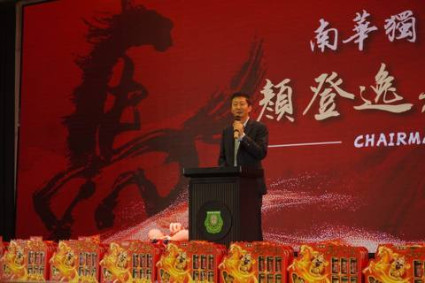
南华独中“万马迎福”红海一片
友族师生共庆展现多元和谐 颜董事长展望AI新局，陈校长感性回顾教改路 本校于近日盛大举办“万马迎福”新春系列活动。校园内张灯结彩，全校董家教生皆身着此充满喜庆的红色新衣亮相，寓意鸿运当头。现场不仅有传统的挥春、瑞狮点睛及大团拜，更邀请了友阅读全文 →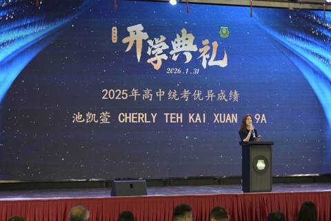
90年风雨兼程 育见百年@菁莪风采
2025毕业生 池凯萱 从篮球县手到统考 9A 佳绩 池凯萱：运动教会我坚韧；学习我从不轻言放弃； 节令鼓是学校给我踏上学习成为领袖的第一步 南华独中 2025 年高三统考成绩单上，池凯萱以 9A 1B 的卓越成绩，成为本校今届最亮眼的优异阅读全文 →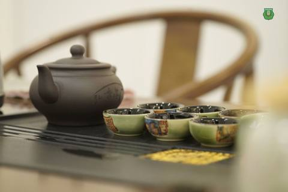
文化茶香润教育新篇：南华独中承办曼绒县校长专业集会
霹州教育厅长亲颁“私立学校领导特选奖”予陳麗冰校长 曼绒南华独立中学今日迎来了一场意义深远的教育盛事。本校于2026年2月 3日正式承办“曼绒县中小学校长专业集会（PGB）与霹雳州教育厅长交流会”。此次活动由霹雳州教育厅长 Encik Zu阅读全文 →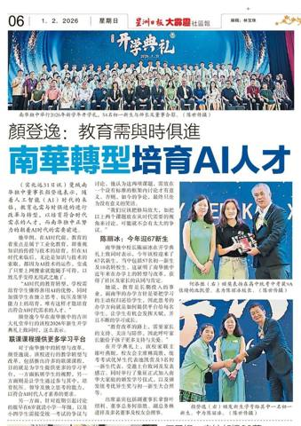
南华转型培育AI人才·颜登逸：教育需与时俱进
——《星洲日报》1/2/2026阅读全文 →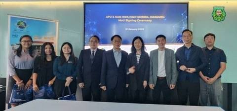
南华独中赴 APU 签署合作备忘录
全面对接未来人才培养体系 曼绒南华独立中学与 亚太科技大学（APU）于2026年1月10日正式在亚太科技大学校园签署合作备忘录（MOU）。此举标志着双方兑现去年11月双方共商的“教育合作项目”口头共识并转化为合作契约，双方借此确立与课程、师阅读全文 →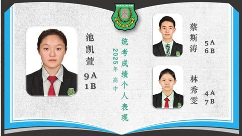
统考成绩表现稳健·高中池凯萱考获9A亮眼成绩
在2025年度第51届全国独中统一考试中，本校考生的整体学术表现稳健提升，尤其初中考生各科总及格率更是全数突破80%，交出了一份亮眼的成绩单。 在高中统考科目中，美术、商业学、电脑与资讯工艺、华文及英文等科目表现不俗，及格率维持在高水平。特阅读全文 →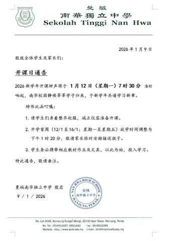